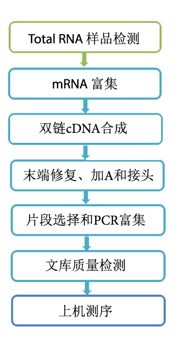
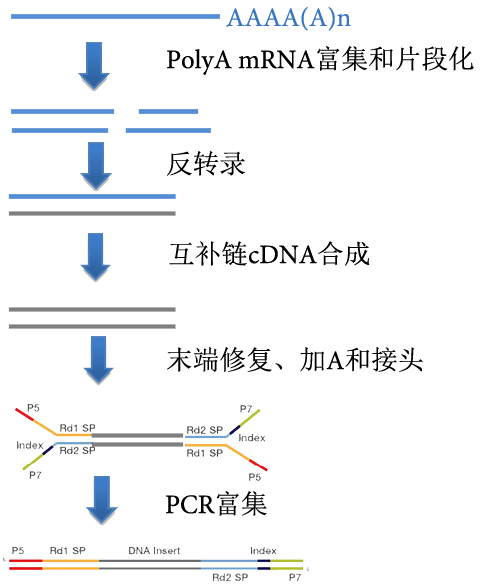
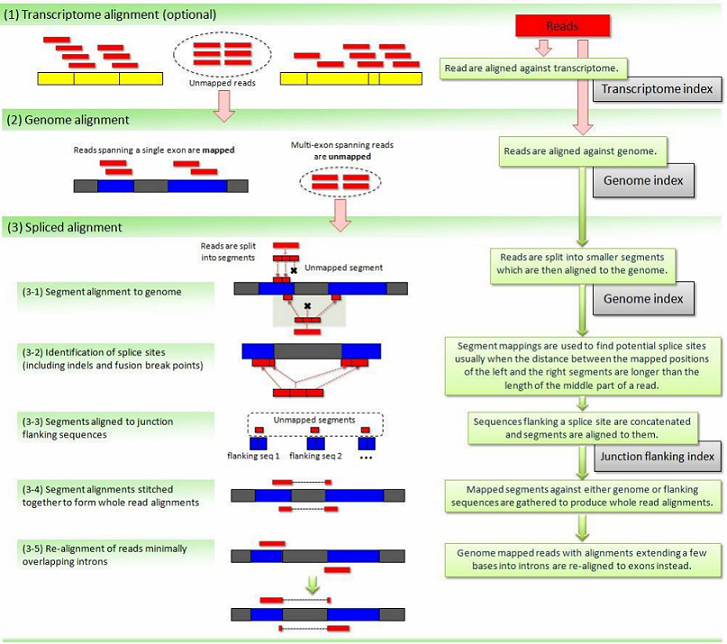
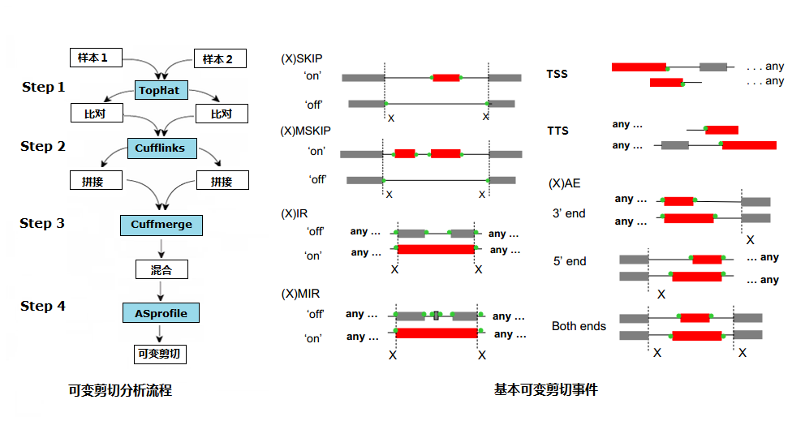
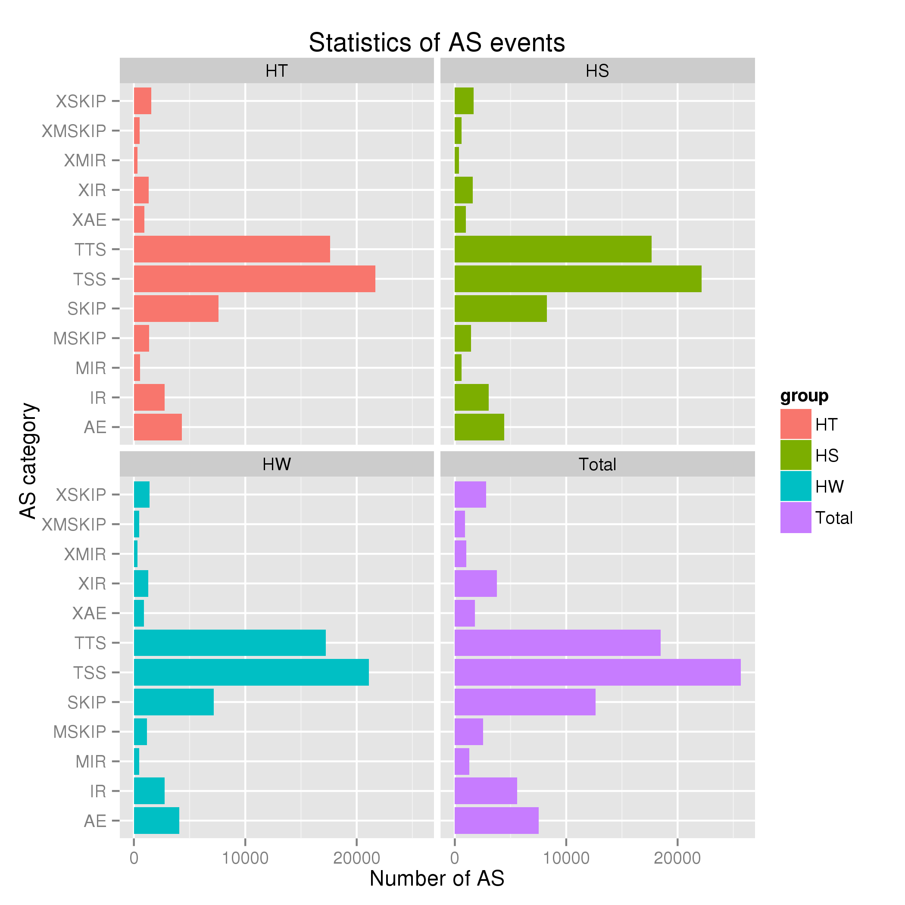

从RNA样品到最终数据获得，样品检测、建库、测序每一个环节都会对数据质量和数量产生影响，而数据质量又会直接影响后续信息分析的结果。因此，获得高质量数据是保证生物信息分析正确、全面、可信的前提。为了从源头上保证测序数据的准确性、可靠性，诺禾致源对样品检测、建库、测序每一个生产步骤都严格把控，从根本上确保了高质量数据的产出。流程图如下：

诺禾致源对RNA样品的检测主要包括4种方法：
(1) 琼脂糖凝胶电泳分析RNA降解程度以及是否有污染 (2) Nanodrop检测RNA的纯度（OD260/280比值） (3) Qubit对RNA浓度进行精确定量 (4) Agilent 2100精确检测RNA的完整性
样品检测合格后，用带有Oligo（dT）的磁珠富集真核生物mRNA（若为原核生物，则通过试剂盒去除rRNA来富集mRNA）。随后加入fragmentation buffer将mRNA打断成短片段，以mRNA为模板，用六碱基随机引物（random hexamers）合成一链cDNA，然后加入缓冲液、dNTPs和DNA polymerase I合成二链cDNA，随后利用AMPure XP beads纯化双链cDNA。纯化的双链cDNA再进行末端修复、加A尾并连接测序接头，然后用AMPure XP beads进行片段大小选择，最后进行PCR富集得到最终的cDNA文库。构建原理图如下：

文库构建完成后，先使用Qubit2.0进行初步定量，稀释文库至1ng/ul，随后使用Agilent 2100对文库的insert size进行检测，insert size符合预期后，使用Q-PCR方法对文库的有效浓度进行准确定量（文库有效浓度 ＞2nM），以保证文库质量。
库检合格后，把不同文库按照有效浓度及目标下机数据量的需求pooling后进行HiSeq/MiSeq测序。
高通量测序(如illumina HiSeqTM2000/MiSeq等测序平台)测序得到的原始图像数据文件经碱基识别(Base Calling)分析转化为原始测序序列(Sequenced Reads)，我们称之为Raw Data或Raw Reads，结果以FASTQ(简称为fq)文件格式存储，其中包含测序序列(reads)的序列信息以及其对应的测序质量信息。
FASTQ格式文件中每个read由四行描述，如下：
@EAS139:136:FC706VJ:2:2104:15343:197393 1:Y:18:ATCACG
GCTCTTTGCCCTTCTCGTCGAAAATTGTCTCCTCATTCGAAACTTCTCTGT
+
@@CFFFDEHHHHFIJJJ@FHGIIIEHIIJBHHHIJJEGIIJJIGHIGHCCF
其中第一行以“@”开头，随后为illumina 测序标识符(Sequence Identifiers)和描述文字(选择性部分)；第二行是碱基序列；第三行以“+”开头，随后为illumina 测序标识符(选择性部分)；第四行是对应序列的测序质量(Cock et al.)。
illumina 测序标识符详细信息如下：
| EAS139 | Unique instrument name |
| 136 | Run ID |
| FC706VJ | Flowcell ID |
| 2 | Flowcell lane |
| 2104 | Tile number within the flowcell lane |
| 15343 | 'x'-coordinate of the cluster within the tile |
| 197393 | 'y'-coordinate of the cluster within the tile |
| 1 | Member of a pair, 1 or 2 (paired-end or mate-pair reads only) |
| Y | Y if the read fails filter (read is bad), N otherwise |
| 18 | 0 when none of the control bits are on, otherwise it is an even number |
| ATCACG | Index sequence |
第四行中每个字符对应的ASCII值减去33，即为对应第二行碱基的测序质量值。如果测序错误率用e表示，illumina HiSeqTM2000/MiSeq的碱基质量值用Qphred表示，则有下列关系：
公式一： Qphred = -10log10(e)
illumina Casava 1.8版本测序错误率与测序质量值简明对应关系如下：
| 测序错误率 | 测序质量值 | 对应字符 |
|---|---|---|
| 5% | 13 | . |
| 1% | 20 | 5 |
| 0.1% | 30 | ? |
| 0.01% | 40 | I |
每个碱基测序错误率是通过测序Phred数值(Phred score, Qphred)通过公式1转化得到，而Phred 数值是在碱基识别(Base Calling)过程中通过一种预测碱基判别发生错误概率模型计算得到的，对应关系如下表所显示：
illumina Casava 1.8版本碱基识别与Phred分值之间的简明对应关系
| Phred分值 | 不正确的碱基识别 | 碱基正确识别率 | Q-sorce |
|---|---|---|---|
| 10 | 1/10 | 90% | Q10 |
| 20 | 1/100 | 99% | Q20 |
| 30 | 1/1000 | 99.9% | Q30 |
| 40 | 1/10000 | 99.99% | Q40 |
测序错误率与碱基质量有关，受测序仪本身、测序试剂、样品等多个因素共同影响。对于RNA-seq技术，测序错误率分布具有两个特点：(1)测序错误率会随着测序序列(Sequenced Reads)长度的增加而升高，这是由于测序过程中化学试剂的消耗而导致的，并且为illumina高通量测序平台都具有的特征。(2)前6个碱基的位置也会发生较高的测序错误率，而这个长度也正好等于在RNA-seq建库过程中反转录所需要的随机引物的长度。所以推测前6个碱基测序错误率较高的原因为随机引物和RNA模版的不完全结合(Jiang et al.)。
图2.1 测序错误率分布图
横坐标为reads的碱基位置，纵坐标为单碱基错误率
GC含量分布检查用于检测有无AT、GC 分离现象，而这种现象可能是测序或者建库所带来的，并且会影响后续的定量分析。
在illumina测序平台的转录组测序中，反转录成cDNA时所用的6bp 的随机引物会引起前几个位置的核苷酸组成存在一定的偏好性。而这种偏好性与测序的物种和实验室环境无关，但会影响转录组测序的均一化程度(Hansen et al.)。除此之外，理论上G和C碱基及A和T碱基含量每个测序循环上应分别相等，且整个测序过程稳定不变，呈水平线。对于DGE测序来说，由于随机引物扩增偏差等原因，常常会导致在测序得到的每个read前6-7个碱基有较大的波动，这种波动属于正常情况。
图2.2 GC含量分布图
横坐标为reads的碱基位置，纵坐标为单碱基所占的比例；不同颜色代表不同的碱基类型
测序得到的原始测序序列，里面含有带接头的、低质量的reads，为了保证信息分析质量，必须对raw reads进行过滤，得到clean reads，后续分析都基于clean reads。
数据处理的步骤如下：
(1) 去除带接头(adapter)的reads；
(2) 去除N(N表示无法确定碱基信息)的比例大于10%的reads；
(3) 去除低质量reads。
RNA-seq 的接头(Adapter, Oligonucleotide sequences for TruSeqTM RNA and DNA Sample Prep Kits) 信息：
RNA 5’ Adapter (RA5), part # 15013205：
5’-AATGATACGGCGACCACCGAGATCTACACTCTTTCCCTACACGACGCTCTTCCGATCT-3’
RNA 3’ Adapter (RA3), part # 15013207：
5’-GATCGGAAGAGCACACGTCTGAACTCCAGTCAC(6位index)ATCTCGTATGCCGTCTTCTGCTTG-3’
图2.3 原始数据过滤结果
表2.4 数据产出质量情况一览表
| Sample name | Raw reads | Clean reads | clean bases | Error rate(%) | Q20(%) | Q30(%) | GC content(%) |
|---|---|---|---|---|---|---|---|
| HS1_1 | 36579608 | 35175205 | 3.52G | 0.03 | 97.88 | 92.88 | 49.39 |
| HS1_2 | 36579608 | 35175205 | 3.52G | 0.03 | 96.50 | 90.38 | 49.59 |
| HS2_1 | 36547734 | 35119463 | 3.51G | 0.03 | 97.85 | 92.81 | 49.53 |
| HS2_2 | 36547734 | 35119463 | 3.51G | 0.03 | 96.57 | 90.49 | 49.72 |
| HT1_1 | 39579555 | 38080839 | 3.81G | 0.03 | 98.14 | 93.75 | 50.07 |
| HT1_2 | 39579555 | 38080839 | 3.81G | 0.03 | 96.95 | 91.67 | 50.22 |
| HT2_1 | 26359935 | 25333042 | 2.53G | 0.03 | 97.63 | 92.06 | 49.22 |
| HT2_2 | 26359935 | 25333042 | 2.53G | 0.04 | 96.46 | 90.16 | 49.41 |
| HW1_1 | 24225169 | 23286831 | 2.33G | 0.03 | 97.89 | 92.92 | 49.37 |
| HW1_2 | 24225169 | 23286831 | 2.33G | 0.03 | 96.54 | 90.48 | 49.62 |
| HW2_1 | 19220911 | 18447581 | 1.84G | 0.03 | 97.91 | 92.95 | 49.14 |
| HW2_2 | 19220911 | 18447581 | 1.84G | 0.03 | 96.56 | 90.52 | 49.33 |
数据质量情况详细内容如下：
(1) Raw reads：统计原始序列数据，以四行为一个单位，统计每个文件的测序序列的个数。
(2) Clean reads：计算方法同 Raw Reads，只是统计的文件为过滤后的测序数据。后续的生物信息分析都是基于Clean reads。
(3) Clean bases：测序序列的个数乘以测序序列的长度，并转化为以G为单位。
(4) Error rate：通过公式1计算得到。
(5) Q20、Q30：分别计算 Phred 数值大于20、30的碱基占总体碱基的百分比。
(6) GC content：计算碱基G和C的数量总和占总的碱基数量的百分比。
测序序列定位算法：根据不同的基因组的特征，我们选取相对合适的软件(动植物用TopHat2、细菌或者基因密度较高的物种用Bowtie2)，合适的参数设置(如最大的内含子长度，会根据已知的该物种的基因模型来进行统计分析)，将过滤后的测序序列进行基因组定位分析。下图为TopHat2的算法示意图：

TopHat2的算法主要分为三个部分：
(1) 将测序序列和转录组进行比对(可选)
(2) 将测序序列整段比对到基因组外显子上
(3) 将测序序列分段比对到基因组的两个外显子上
如果参考基因组选择合适，而且相关实验不存在污染，实验所产生的测序序列的定位的百分比正常情况下会高于70% (Total Mapped Reads or Fragments)，其中具有多个定位的测序序列(Multiple Mapped Reads or Fragments)占总体的百分比通常不会超过10%。
表3.1 Reads与参考基因组比对情况一览表
| Sample name | HS1 | HS2 | HT1 | HT2 | HW1 | HW2 |
|---|---|---|---|---|---|---|
| Total reads | 70350410 | 70238926 | 76161678 | 50666084 | 46573662 | 36895162 |
| Total mapped | 60529821 (86.04%) | 60232484 (85.75%) | 63555439 (83.45%) | 43461327 (85.78%) | 40246848 (86.42%) | 31876850 (86.4%) |
| Multiple mapped | 606556 (0.86%) | 633575 (0.9%) | 714678 (0.94%) | 450156 (0.89%) | 389470 (0.84%) | 307004 (0.83%) |
| Uniquely mapped | 59923265 (85.18%) | 59598909 (84.85%) | 62840761 (82.51%) | 43011171 (84.89%) | 39857378 (85.58%) | 31569846 (85.57%) |
| Read-1 | 30176973 (42.9%) | 29987004 (42.69%) | 31592931 (41.48%) | 21654629 (42.74%) | 20028779 (43%) | 15870924 (43.02%) |
| Read-2 | 29746292 (42.28%) | 29611905 (42.16%) | 31247830 (41.03%) | 21356542 (42.15%) | 19828599 (42.57%) | 15698922 (42.55%) |
| Reads map to '+' | 29930036 (42.54%) | 29783311 (42.4%) | 31409912 (41.24%) | 21476601 (42.39%) | 19923501 (42.78%) | 15756384 (42.71%) |
| Reads map to '-' | 29993229 (42.63%) | 29815598 (42.45%) | 31430849 (41.27%) | 21534570 (42.5%) | 19933877 (42.8%) | 15813462 (42.86%) |
| Non-splice reads | 42357242 (60.21%) | 42528691 (60.55%) | 45227757 (59.38%) | 31347392 (61.87%) | 28062847 (60.25%) | 22544596 (61.1%) |
| Splice reads | 17566023 (24.97%) | 17070218 (24.3%) | 17613004 (23.13%) | 11663779 (23.02%) | 11794531 (25.32%) | 9025250 (24.46%) |
| Reads mapped in proper pairs | 53795182 (76.47%) | 54428240 (77.49%) | 56181352 (73.77%) | 38524314 (76.04%) | 36101400 (77.51%) | 28500388 (77.25%) |
比对结果统计详细内容如下：
(1) Total reads：测序序列经过测序数据过滤后的数量统计(Clean data)。
(2) Total mapped：能定位到基因组上的测序序列的数量的统计；一般情况下，如果不存在污染并且参考基因组选择合适的情况下，这部分数据的百分比大于 70%。
(3) Multiple mapped：在参考序列上有多个比对位置的测序序列的数量统计；这部分数据的百分比一般会小于10%。
(4) Uniquely mapped：在参考序列上有唯一比对位置的测序序列的数量统计。
(5) Reads map to '+'，Reads map to '-'：测序序列比对到基因组上正链和负链的统计。
(6) Splice reads：(2)中，分段比对到两个外显子上的测序序列(也称为Junction reads)的统计，Non-splice reads为整段比对到外显子的将测序序列的统计，Splice reads的百分比取决于测序片段的长度。
对Total mapped reads的比对到基因组上的各个部分的情况进行统计，定位区域分为Exon(外显子)、Intron(内含子)和Intergenic(基因间隔区域)。
正常情况下，Exon (外显子)区域的测序序列定位的百分比含量应该最高，定位到Intron (内含子) 区域的测序序列可能是由于非成熟的mRNA的污染或者基因组注释不完全导致的，而定位到Intergenic(基因间隔区域)的测序序列可能是因为基因组注释不完全以及背景噪音。
图3.2 Reads在参考基因组不同区域的分布情况
对Total mapped reads的比对到基因组上的各个染色体（分正负链）的密度进行统计，如下图所示，具体作图的方法为用滑动窗口(window size)为1K，计算窗口内部比对到碱基位置上的reads的中位数，并转化成 log2 。正常情况下，整个染色体长度越长，该染色体内部定位的reads总数会越多(Marquez et al.)。从定位到染色体上的reads数与染色体长度的关系图中，可以更加直观看出染色体长度和reads总数的关系。
图3.3 Reads在染色体上的密度分布图
图一：横坐标为染色体的长度信息(以百万碱基为单位)，纵坐标为log2(reads的密度的中位数)，绿色为正链，红色为负链 图二：横坐标为染色体的长度信息(单位为Mb)，纵坐标为mapped到染色体上的reads数(单位为M)
我们提供RNA-seq Reads在基因组上比对结果的bam格式文件，部分物种还提供相应的参考基因组和注释文件，并推荐使用IGV (Integrative Genomics Viewer) 浏览器对bam文件进行可视化浏览。IGV浏览器具有以下特点：(1)能在不同尺度下显示单个或多个读段在基因组上的位置，包括读段在各个染色体上的分布情况和在注释的外显子、内含子、剪接接合区、基因间区的分布情况等；(2)能在不同尺度下显示不同区域的读段丰度，以反映不同区域的转录水平；(3)能显示基因及其剪接异构体的注释信息；(4)能显示其他注释信息；(5)既可以从远程服务器端下载各种注释信息，又可以从本地加载注释信息。IGV浏览器使用方法可参考我们提供的使用说明文档(IGVQuickStart.pdf)。

图3.4 IGV浏览器界面
用ASprofile软件对Cufflinks (Trapnell et al.)预测出的基因模对每个样品的可变剪切事件分别进行分类和表达量统计。分析流程及ASprofile中的可变剪切事件分类如下图所示：

12类可变剪切事件定义如下:
(1) TSS: Alternative 5' first exon (transcription start site) 第一个外显子可变剪切 (2) TTS: Alternative 3' last exon (transcription terminal site) 最后一个外显子可变剪切 (3) SKIP: Skipped exon (SKIP_ON,SKIP_OFF pair) 单外显子跳跃 (4) XSKIP: Approximate SKIP (XSKIP_ON,XSKIP_OFF pair) 单外显子跳跃（模糊边界） (5) MSKIP: Multi-exon SKIP (MSKIP_ON,MSKIP_OFF pair) 多外显子跳跃 (6) XMSKIP: Approximate MSKIP (XMSKIP_ON,XMSKIP_OFF pair) 多外显子跳跃（模糊边界） (7) IR: Intron retention (IR_ON, IR_OFF pair) 单内含子滞留 (8) XIR: Approximate IR (XIR_ON, XIR_OFF pair) 单内含子滞留（模糊边界） (9) MIR: Multi-IR (MIR_ON, MIR_OFF pair) 多内含子滞留 (10) XMIR: Approximate MIR (XMIR_ON, XMIR_OFF pair) 多内含子滞留（模糊边界） (11) AE: Alternative exon ends (5', 3', or both) 可变 5'或3'端剪切 (12) XAE: Approximate AE 可变 5'或3'端剪切（模糊边界）
 北京诺禾致源生物信息科技有限公司
北京诺禾致源生物信息科技有限公司

图4.1 AS分类和数量统计
纵轴为可变剪切事件的分类缩写，横轴为该种事件下可变剪切的数量，不同样品用不同子图和颜色区分
 北京诺禾致源生物信息科技有限公司
北京诺禾致源生物信息科技有限公司
表4.2 AS结构和表达量统计
| event_id | event_type | gene_id | chrom | event_start | event_end | event_pattern | strand | fpkm | ref_id |
|---|---|---|---|---|---|---|---|---|---|
| 1000001 | TSS | CUFF.100 | 1 | 3438277 | 3438330 | 3438330 | + | 1.0000000000 | ENSGALT00000010225 |
| 1000002 | TSS | CUFF.100 | 1 | 3450218 | 3450253 | 3450253 | + | 3.0000000000 | ENSGALT00000010225 |
| 1000003 | TSS | CUFF.100 | 1 | 3456744 | 3457165 | 3457165 | + | 2.0000000000 | ENSGALT00000010225 |
| 1000004 | TTS | CUFF.100 | 1 | 3474806 | 3478178 | 3474806 | + | 5.0000000000 | ENSGALT00000010225 |
(1) event_id: AS事件编号
(2) event_type: AS事件类型 (TSS, TTS, SKIP_{ON,OFF}, XSKIP_{ON,OFF}, MSKIP_{ON,OFF}, XMSKIP_{ON,OFF}, IR_{ON
,OFF}, XIR_{ON,OFF}, AE, XAE)
(3) gene_id: cufflink组装结果中的基因编号
(4) chrom: 染色体编号
(5) event_start: AS事件起始位置
(6) event_end: AS事件结束位置
(7) event_signature: AS事件特征 (for TSS, TTS - inside boundary of alternative marginal exon; for *SKIP_ON,the coordinates of the skipped exon(s); for *SKIP_OFF, the coordinates of the enclosing introns; for *IR_ON, the end coordinates of the long, intron-containing exon; for *IR_OFF, the listing of coordinates of all the exons along the path containing the retained intron; for *AE, the coordinates of the exon variant)
(8) strand: 基因正负链信息
(9) fpkm: 此AS类型该基因表达量
(10) ref_id: 此基因在参考注释文件中的编号
将所有测序reads数据的基因组定位结果放到一起，用 Cufflinks 进行组装，然后用Cuffcompare和已知的基因模型进行比较，可以:(1)发现新的未知基因（相对于原有基因注释文件）；(2)发现已知基因新的外显子区域；(3)对已知基因的起始和终止位置进行优化。新基因和新外显子区域预测结果为GTF格式的注释文件。GTF格式的详细说明可参考(http://mblab.wustl.edu/GTF22.html)
表5.1 新转录本结构注释结果
| seqname | source | feature | start | end | score | strand | frame | attributes |
|---|---|---|---|---|---|---|---|---|
| 1 | novelGene | exon | 18531 | 19499 | . | + | . | gene_id "Novel00001"; transcript_id "Novel00001.1"; exon_number "1"; |
| 1 | novelGene | exon | 20813 | 21813 | . | + | . | gene_id "Novel00002"; transcript_id "Novel00002.1"; exon_number "1"; |
| 1 | novelGene | exon | 23917 | 24402 | . | + | . | gene_id "Novel00003"; transcript_id "Novel00003.1"; exon_number "1"; |
| 1 | novelGene | exon | 25189 | 26100 | . | + | . | gene_id "Novel00004"; transcript_id "Novel00004.1"; exon_number "1"; |
(1) seqname：染色体编号
(2) source：来源标签，这里的novelGene指新基因
(3) feature：区域类型，目前我们预测外显子区域
(4) start：起始坐标
(5) end：终止坐标
(6) score：不必关注
(7) strand：正负链信息
(8) frame：不必关注
(9) attributes：属性，包括基因编号、转录本编号等信息
表5.2 已知基因结构优化
| Gene_id | Chromosome | Strand | Original_span | Assembled_span |
|---|---|---|---|---|
| ENSGALG00000000003 | 1 | + | 19947199~19967662 | 19947199~19967662 |
| ENSGALG00000000004 | Z | - | 34293201~34299523 | 34293201~34299554 |
| ENSGALG00000000011 | 6 | - | 30928671~30932616 | 30928671~30932616 |
| ENSGALG00000000013 | 22 | + | 2783575~2787337 | 2783575~2787453 |
(1) Gene_id：原注释文件中基因命名编号
(2) Chromosome：染色体编号
(3) Strand：正负链信息
(4) Original_span：原注释文件中基因起始位置~终止位置
(5) Assembled_span：转录组拼接结果中基因起始位置~终止位置
SNP全称Single Nucleotide Polymorphisms，是指在基因组上由单个核苷酸变异形成的遗传标记，其数量很多，多态性丰富。从理论上来看每一个SNP 位点都可以有4 种不同的变异形式，但实际上发生的只有两种，即转换和颠换，二者之比为1:2。SNP在CG序列上出现最为频繁，而且多是C转换为T，原因是CG中的C常为甲基化的，自发地脱氨后即成为胸腺嘧啶。一般而言，SNP是指变异频率大于1%的单核苷酸变异。InDel(insertion-deletion)是指相对于参考基因组，样本中发生的小片段的插入缺失，该插入缺失可能含一个或多个碱基。
我们通过samtools和picard-tools等工具对比对结果进行染色体坐标排序、去掉重复的reads等处理，最后通过变异检测软件GATK2分别进行SNP Calling和InDel Calling，并对原始结果进行过滤，得到如下表形式的分析结果。其中InDel分析结果每列的含义和SNP结果是一致的。
表6 SNP分析结果
| #CHROM | POS | REF | ALT | HS1 | HS2 | HT1 | HT2 | HW1 | HW2 |
|---|---|---|---|---|---|---|---|---|---|
| 1 | 502 | A | G | .. | .. | 11 | .. | 00 | .. |
| 1 | 563 | C | A | .. | .. | 11 | 11 | 00 | .. |
| 1 | 1213 | A | G | .. | .. | 11 | .. | .. | .. |
| 1 | 1316 | G | A | 00 | 00 | 01 | .. | 00 | 00 |
#CHROM：SNP位点所在染色体
POS：SNP位点坐标
REF：参考序列在该位点的基因型
ALT：该位点的其它基因型
other coloums：每个个体该位点的基因型(数字代表支持该位点的reads个数)
一个基因表达水平的直接体现就是其转录本的丰度情况，转录本丰度程度越高，则基因表达水平越高。在RNA-seq分析中，我们可以通过定位到基因组区域或基因外显子区的测序序列(reads)的计数来估计基因的表达水平。Reads计数除了与基因的真实表达水平成正比外，还与基因的长度和测序深度成正相关。为了使不同基因、不同实验间估计的基因表达水平具有可比性，人们引入了RPKM的概念，RPKM(Reads Per Kilo bases per Million reads)是每百万reads中来自某一基因每千碱基长度的reads数目。RPKM同时考虑了测序深度和基因长度对reads计数的影响，是目前最为常用的基因表达水平估算方法 (Mortazavi et al., 2008)。
结果文件分别统计了不同表达水平下基因的数量以及单个基因的表达水平。一般情况下，RPKM数值0.1或者1作为判断基因是否表达的阈值，不同的文献所采用的阈值不同。
表7.1 不同表达水平区间的基因数量统计表
| RPKM Interval | HS1 | HS2 | HT1 | HT2 | HW1 | HW2 |
|---|---|---|---|---|---|---|
| 0-1 | 11678(44.62%) | 11157(42.63%) | 11644(44.49%) | 11552(44.14%) | 11663(44.56%) | 11652(44.52%) |
| 1-3 | 3416(13.05%) | 3829(14.63%) | 3497(13.36%) | 3622(13.84%) | 3359(12.83%) | 3503(13.39%) |
| 3-15 | 6586(25.17%) | 6741(25.76%) | 6719(25.67%) | 6731(25.72%) | 6441(24.61%) | 6522(24.92%) |
| 15-60 | 3436(13.13%) | 3421(13.07%) | 3278(12.53%) | 3277(12.52%) | 3612(13.80%) | 3442(13.15%) |
| >60 | 1055(4.03%) | 1023(3.91%) | 1033(3.95%) | 989(3.78%) | 1096(4.19%) | 1052(4.02%) |
表7.2 基因表达水平统计表
| geneID | HS1 | HS2 | HT1 | HT2 | HW1 | HW2 |
|---|---|---|---|---|---|---|
| ENSGALG00000000003 | 0.17746274801677 | 0.575099242840486 | 0.182076770185256 | 0.328750216870462 | 0.224268554819692 | 0.283162389409366 |
| ENSGALG00000000004 | 9.44484534441505 | 7.21882264974696 | 8.9363804028376 | 9.69400538281103 | 10.4063844078955 | 9.56312902348064 |
| ENSGALG00000000011 | 14.7023552960835 | 14.2354845718464 | 11.3202566956865 | 12.2943657226002 | 13.357586905413 | 10.060029486986 |
| ENSGALG00000000013 | 6.74886884118205 | 7.48873293737827 | 6.66826144950897 | 7.41338358787573 | 7.53637022212031 | 7.50828610123859 |
定量饱和曲线检查反映了基因表达水平定量对数据量的要求。表达量越高的基因，就越容易被准确定量；反之，表达量低的基因，需要较大的测序数据量才能被准确定量。
表达水平的饱和曲线的具体算法描述如下：分别对10%、20%、30%……90%的总体测序数据单独进行基因定量分析，并把所有数据条件下得到的基因的表达水平作为最终的数值。用每个百分比条件下求出的单个基因的RPKM数值和最终对应基因的表达水平数值进行比较，如果差异小于15%，则认为这个基因在这个条件下定量是准确的。
图8.1 定量饱和曲线检查分布图
横坐标代表定位到基因组上的reads数占总reads数的百分比，纵坐标代表定量误差在15%以内的基因的比例
生物学重复是任何生物学实验所必须的，高通量测序技术也不例外(Hansen et al.)。生物学重复主要有两个用途：一个是证明所涉及的生物学实验操作是可以重复的且变异不大，另一个为后续的差异基因分析所需要的。样品间基因表达水平相关性是检验实验可靠性和样本选择是否合理性的重要指标。相关系数越接近1，表明样品之间表达模式的相似度越高。Encode计划建议皮尔逊相关系数的平方(R2)大于0.92(理想的取样和实验条件下)。具体的项目操作中，我们要求R2至少要大于0.8，否则需要对样品做出合适的解释，或者重新进行实验。
图8.2 RNA-Seq相关性检查
图一：样品间的相关系数散点图，R2:pearson相关系数的平方；图二：样品间相关系数热图
理想条件下，对于RNA-seq技术来说，测序序列(reads)之间为独立抽样并且reads在所有表达的转录本上的分布应该呈现均一化分布。然而很多研究表明，很多偏好型的因素都会影响这种均一化的分布(Dohm et al., 2008)。例如，在RNA-seq建库过程中，片段破碎和RNA反转录的顺序不一样会导致RNA-seq最终的数据呈现严重的3’偏好性。其他因素还包括转录区域的GC含量不同、随机引物等等，并且生物体内从5’或者3’的降解过程同样会导致不均一性分布。
图8.3 不同表达水平的转录本的reads密度分布图
High：高表达量转录本；Medium：中度表达量转录本；Low：低表达量转录本；横坐标为距离转录本5’端的相对位置(以百分比表示)，纵坐标为覆盖深度的平均值
通过所有基因的RPKM的分布图以及盒形图对不同实验条件下的基因表达水平进行比较。对于同一实验条件下的重复样品，最终的RPKM为所有重复数据的平均值。
图9.1 不同实验条件下基因表达水平比对图
RPKM分布图(图一)的横坐标为log10(RPKM), 纵坐标为基因的密度。RPKM盒形图(图二)的横坐标为样品名称，纵坐标为log10(RPKM)，每个区域的盒形图对五个统计量(至上而下分别为最大值，上四分位数，中值，下四分位数和最小值)
基因差异表达的输入数据为基因表达水平分析中得到的readcount数据。对于有生物学重复的样品，分析我们采用DESeq（Anders et al, 2010）进行分析：
该分析方法基于的模型是负二项分布，第 i 个基因在第 j 个样本中的 read count 值为Kij，则有
Kij ～ NB(μij,σij2)
对于无生物学重复的样品，先采用TMM对read count数据进行标准化处理，之后用DEGseq进行差异分析。差异表达基因列表如下：
表9.2 差异基因列表
| gene_id | readcount_HS | readcount_HT | log2FoldChange | pval | padj |
|---|---|---|---|---|---|
| Novel05868 | 4.13191705589116 | 2835.13040784994 | -9.4224 | 4.6547e-140 | 1.139e-135 |
| Novel05608 | 1603.13964277834 | 3.08090973423561 | 9.0233 | 8.0171e-124 | 9.8089e-120 |
| Novel08190 | 37.3477675965147 | 872.135924228591 | -4.5455 | 1.1332e-40 | 9.2435e-37 |
| Novel05435 | 1408.60468719178 | 143.509885523625 | 3.295 | 1.0151e-31 | 6.21e-28 |
差异基因列表主要包括的内容：
(1) Gene_id: 基因编号
(2) readcount_Sample1：校正后样品1的readcount值
(3) readcount_Sample2：校正后样品2的readcount值
(4) log2FoldChange: log2(Sample1/Sample2)
(5) pvalue(pval): 统计学差异显著性检验指标
(6) qvalue(padj): 校正后的pvalue。qvalue越小，表示基因表达差异越显著
用火山图可以推断差异基因的整体分布情况，对于无生物学重复的实验，为消除生物学变异，我们从差异倍数和显著水平两个水平进行评估，对差异基因进行筛选，阈值设定一般为: |log2(FoldChange)| > 1 且 qvalue < 0.005。对于有生物学重复的实验，由于DESeq已经进行了生物学变异的消除，我们对差异基因筛选的标准一般为: padj < 0.05。
图9.3 差异基因火山图
有显著性差异表达的基因用红色点表示；横坐标代表基因在不同样本中表达倍数变化；纵坐标代表基因表达量变化差异的统计学显著性
聚类分析用于判断差异基因在不同实验条件下的表达模式；通过将表达模式相同或相近的基因聚集成类，从而识别未知基因的功能或已知基因的未知功能；因为这些同类的基因可能具有相似的功能，或是共同参与同一代谢过程或细胞通路。以不同实验条件下的差异基因的RPKM值为表达水平，做层次聚类(hierarchical clustering)分析，不同的颜色的区域代表不同的聚类分组信息，同组内的基因表达模式相近，可能具有相似的功能或参与相同的生物学过程。
除了差异基因表达量rpkm层次聚类分析，我们对还分别用H-cluster、K-means和SOM等三种方法对差异基因的相对表达水平值log2(ratios)进行聚类。不同的聚类算法分别将差异基因分为若干cluster，同一cluster中的基因在不同的处理条件下具有相似的表达水平变化趋势。
图9.4 差异基因聚类图
图一为整体rpkm层次聚类图，以log10RPKM值进行聚类，红色表示高表达基因，蓝色表示低表达基因。颜色从红到蓝，表示log10(RPKM)从大到小；图二为log2(ratios)折线图，每个子图中的灰色线条表示一个cluster中的基因在不同实验条件下相对表达量的折线图，蓝色线条表示这个cluster中的所有基因在不同实验条件下相对表达量的平均值的折线图，x轴表示实验条件，y轴表示相对表达量
Gene Ontology（简称 GO, http://www.geneontology.org/）是基因功能国际标准分类体系。根据实验目的筛选差异基因后，研究差异基因在 Gene Ontology 中的分布状况将阐明实验中样本差异在基因功能上的体现。GO富集分析方法为GOseq（Young et al, 2010）,此方法基于 Wallenius non-central hyper-geometric distribution。相对于普通的超几何分布(Hyper-geometric distribution)，此分布的特点是从某个类别中抽取个体的概率与从某个类别之外抽取一个个体的概率是不同的，这种概率的不同是通过对基因长度的偏好性进行估计得到的，从而能更为准确地计算出 GOterm 被差异基因富集的概率。
表10.1 差异基因GO富集列表
| GO_accession | Description | Term_type | Over_represented_pValue | Corrected_pValue | DEG_item | DEG_list |
|---|---|---|---|---|---|---|
| GO:0019031 | viral envelope | cellular_component | 1.3055e-08 | 8.7382e-05 | 9 | 106 |
| GO:0036338 | viral membrane | cellular_component | 1.3055e-08 | 8.7382e-05 | 9 | 106 |
| GO:0005576 | extracellular region | cellular_component | 5.2276e-07 | 0.0023327 | 24 | 106 |
| GO:0044423 | virion part | cellular_component | 7.3241e-07 | 0.0024512 | 10 | 106 |
结果表格详细内容如下：
(1) GO_accession：Gene Ontology数据库中唯一的标号信息
(2) Description：Gene Ontology功能的描述信息
(3) Term_type：该GO的类别(cellular_component：细胞组分；biological_process：生物学过程；molecular_function：分子功能)
(4) Over_represented_pValue：富集分析统计学显著水平
(5) Corrected_pValue：矫正后的P-Value，一般情况下，P-value < 0.05 该功能为富集项
(6) DEG_item：与该GO相关的差异基因的数目
(7) DEG_list：GO注释的差异基因数目
有向无环图(Directed Acyclic Graph，DAG)为差异基因GO富集分析结果的图形化展示方式，分支代表包含关系，从上至下所定义的功能范围越来越小，一般选取GO富集分析的结果前10位作为有向无环图的主节点，并通过包含关系，将相关联的GO Term一起展示，颜色的深浅代表富集程度。我们的项目中分别绘制生物过程(biological process)、分子功能(molecular function)和细胞组分(cellular component)的DAG图。
图10.2 GO富集有向无环图
每个节点代表一个GO术语，方框代表的是富集程度为TOP10的GO，颜色的深浅代表富集程度，颜色越深就表示富集程度越高，每个节点上展示了该TERM的名称及富集分析的p-value
差异基因GO富集柱状图，直观的反映出在生物过程(biological process)、细胞组分(cellular component)和分子功能(molecular function)富集的GO term上差异基因的个数分布情况。我们挑选了富集最显著的30个GO term在图中展示，如果不足30条，则全部展示。
图10.3 GO富集柱状图
图一：纵坐标为富集的GO term，横坐标为该term中差异基因个数。不同颜色用来区分生物过程、细胞组分和分子功能，带“*”为富集的GOterm 图二：对图一中的GO，按生物过程、细胞组分和分子功能三大类别及差异基因上下调分类画的三个子图
在生物体内，不同基因相互协调行使其生物学功能，通过Pathway显著性富集能确定差异表达基因参与的最主要生化代谢途径和信号转导途径。KEGG（Kyoto Encyclopedia of Genes and Genomes）是有关Pathway的主要公共数据库(Kanehisa,2008）。Pathway显著性富集分析以KEGG Pathway为单位，应用超几何检验，找出与整个基因组背景相比，在差异表达基因中显著性富集的Pathway。
表11.1 差异基因KEGG富集列表
| #Term | Database | Id | Sample number | Background number | P-Value | Corrected P-Value |
|---|---|---|---|---|---|---|
| Salivary secretion | KEGG PATHWAY | ko04970 | 3 | 59 | 0.0033102359777 | 0.682190175998 |
| Calcium signaling pathway | KEGG PATHWAY | ko04020 | 4 | 137 | 0.00514860510187 | 0.682190175998 |
| Vascular smooth muscle contraction | KEGG PATHWAY | ko04270 | 3 | 86 | 0.00944942544697 | 0.834699247816 |
| Long-term depression | KEGG PATHWAY | ko04730 | 2 | 42 | 0.0190746039499 | 1.0 |
结果表格详细内容如下：
(1) #Term：KEGG通路的描述信息。
(2) Id：KEGG数据库中通路唯一的编号信息。
(3) Sample number：该通路下差异基因的个数。
(4) Background number：该通路下基因的个数。
(5) P-value：富集分析统计学显著水平。
(6) Corrected P-value：矫正后的统计学显著水平，一般情况下，P-value < 0.05 该功能为富集项。
散点图是KEGG富集分析结果的图形化展示方式。在此图中，KEGG富集程度通过Rich factor、Qvalue和富集到此通路上的基因个数来衡量。其中Rich factor指差异表达的基因中位于该pathway条目的基因数目与所有有注释基因中位于该pathway条目的基因总数的比值。Rich factor越大，表示富集的程度越大。Qvalue是做过多重假设检验校正之后的Pvalue，Qvalue的取值范围为[0,1]，越接近于零，表示富集越显著。我们挑选了富集最显著的20条pathway条目在该图中进行展示，若富集的pathway条目不足20条，则全部展示。
图11.2 差异基因KEGG富集散点图
纵轴表示pathway名称，横轴表示Rich factor，点的大小表示此pathway中差异表达基因个数多少，而点的颜色对应于不同的Qvalue范围
将差异基因富集出的通路图展示出来，该通路图中，包含上调基因的KO节点标红色，包含下调基因的KO节点标绿色，包含上下调的标黄色。鼠标悬停于标记的KO节点，弹出差异基因细节框，标色同上，括号中数字为log2(Fold change)。以上步骤可脱机实现，如连接互联网，点击各个节点，可以连接到KEGG官方数据库中各个KO的具体信息页。
图11.3 显著富集的KEGG pathway代谢通路图
我们主要应用STRING蛋白质互作数据库(http://string-db.org/)中的互作关系，针对数据库中包含的物种，直接从数据库中提取出目标基因集(比如差异基因list)的互作关系构建网络；针对数据库中不包含的物种，我们首先将目标基因集序列应用blastx比对到string数据库中包含的参考物种蛋白质序列上，并利用参考物种的蛋白质互作关系构建互作网络。
我们提供差异基因蛋白互作网络数据文件，此文件可以直接导入Cytoscape软件进行可视化编辑。Cytoscape软件使用方法可参考我们提供的使用说明文档(CytoscapeQuickStart.pdf)。客户可以针对一些网络的拓扑属性进行统计和标示作图，比如：互作网络图中节点(node)的大小与此节点的度(degree)成正比，即与此节点相连的边越多，它的度越大，节点也就越大，这些节点在网络中可能处于较为核心的位置。节点的颜色与此节点的聚集系数(clustering coefficient)相关，颜色梯度由绿到红对应聚集系数的值由低到高；聚集系数表示此节点的邻接点之间的连通性好坏，聚集系数值越高表示此节点的邻接点之间的连通性越好等等。根据不同的研究目的和需求，客户还可以在网络图中进行调整节点位置和颜色、标注表达量水平等操作。需要注意的是，通过blast比对得到的结果不能保证较好的准确性，这部分的工作只是给客户提供参考，辅助客户发现一些可能的重要的基因。按我们提供的使用说明将文件导入Cytoscape软件后的效果图如下：
图12 Cytoscape软件界面
DEU(differential exon usage)分析是目前最好的用于研究可变剪切中AEU(alternative exon usage)的方法。我们使用DEXSeq软件进行DGU分析。DEXSeq使用广义线性模型，可以在外显子水平上检测基因的差异表达。我们对DEU基因筛选的标准为：padjust < 0.05。DEU基因各外显子表达情况详细信息通过如下图表展示，图中红色block代表表达水平差异显著的外显子。
表13 DEU基因列表
| geneID | exonID | dispersion | pvalue | padjust | meanBase | log2fold(HT/HS) |
|---|---|---|---|---|---|---|
| CUFF.10094(C9ORF4) | E032 | 0.0333243266320161 | 6.57775617307621e-08 | 0.000198424105475819 | 60.9055801539374 | 1.83598226737313 |
| CUFF.10106(EPB41L4B) | E032 | 0.0251736732851987 | 1.53532742075413e-12 | 1.19094616919602e-08 | 53.015721827248 | 2.34024742143013 |
| CUFF.10306(ENSGALG00000014852) | E001 | 0.00846205154634375 | 1.83897341798911e-12 | 1.36164279043979e-08 | 903.970101102827 | -0.887694906096006 |
| CUFF.10306(ENSGALG00000014852) | E002 | 0.00877226507526882 | 0 | 0 | 177.802074469467 | 2.32050639049624 |
(1) geneID：基因编号
(2) exonID：外显子编号
(3) dispersion：统计学值，离差
(4) pvalue：统计学显著水平
(5) padjust：矫正后的统计学显著水平
(6) meanBase：矫正后的平均表达量
(7) log2fold(sample2/sample1)：矫正后的差异表达倍数

图13 DEU基因外显子表达水平图
(A). Expression estimates from a call totestForDEU. Shown in red is the exon that showed signifcant diferential exon usage; (B). As in A, but including the annotated transcript models; (C). As in A, with normalized count values of each exon in each of the samples; (D). The plot represents the splicing estimates, as in A, but taking away the overall gene expression.
Anders, S.(2010). HTSeq: Analysing high-throughput sequencing data with Python.(HTSeq) Anders, S., and Huber, W. (2010). Differential expression analysis for sequence count data. Genome Biol.(DESeq) Anders, S. and Huber, W. (2012). Differential expression of RNA-Seq data at the gene level-the DESeq package.(DEseq) Anders S, Reyes A, Huber W. (2012). Detecting differential usage of exons from RNA-seq data. Genome Research. (DEXSeq) Kanehisa, M., M. Araki, et al. (2008). KEGG for linking genomes to life and the environment. Nucleic acids research.(KEGG) Kim, D., G. Pertea, et al. (2012). TopHat2: Parallel mapping of transcriptomes to detect InDels, gene fusions, and more.(TopHat2) Langmead, B., Trapnell, C., Pop, M. & Salzberg, S.L. (2009). Ultrafast and memory-efficient alignment of short DNA sequences to the human genome. Genome Biol.(Bowtie) Langmead, B. and S. L. Salzberg (2012). Fast gapped-read alignment with Bowtie 2. Nature methods.(Bowtie 2) Mao, X., Cai, T., Olyarchuk, J.G., Wei, L. (1995). Automated genome annotation and pathway identification using the KEGG Orthology (KO) as a controlled vocabulary. Bioinformatics.(KOBAS) Marioni, J. C., C. E. Mason, et al. (2008). RNA-seq: an assessment of technical reproducibility and comparison with gene expression arrays. Genome research. McKenna, A, Hanna, M, Banks, E, Sivachenko, A, Cibulskis, K, Kernytsky, A, Garimella, K, Altshuler, D, Gabriel, S, Daly, M, DePristo, MA. 2010. The Genome Analysis Toolkit: a MapReduce framework for analyzing next-generation DNA sequencing data. Genome Research.(GATK) Mortazavi, A., B. A. Williams, et al. (2008). Mapping and quantifying mammalian transcriptomes by RNA-Seq. Nature methods. Robinson, M. D., McCarthy, D. J. & Smyth, G. K. edgeR: a Bioconductor package for differential expression analysis of digital gene expression data. Bioinformatics.(edgeR) Robinson, M. D. & Oshlack, A. (2010)A scaling normalization method for differential expression analysis of RNA-seq data. Genome Biol.(DEGSeq) Trapnell, C. et al. (2010).Transcript assembly and quantification by RNA-seq reveals unannotated transcripts and isoform switching during cell differentiation. Nat. Biotechnol.(Cufflinks) Trapnell, C., Pachter, L., and Salzberg, S.L. (2009). TopHat: discovering splice junctions with RNA-Seq. Bioinformatics.(TopHat) Trapnell, C., A. Roberts, et al. (2012). Differential gene and transcript expression analysis of RNA-seq experiments with TopHat and Cufflinks. nature protocols.(Tophat & Cufflinks) Wang, L.Feng, Z.Wang, X.Zhang, X. (2010). DEGseq: an R package for identifying differentially expressed genes from RNA-seq data. Bioinformatics.(DEGseq) Wang, Z., M. Gerstein, et al. (2009). RNA-Seq: a revolutionary tool for transcriptomics. Nature Reviews Genetics. Young, M. D., Wakefield, M. J., Smyth, G. K., and Oshlack, A. (2010).Gene ontology analysis for RNA-seq: accounting for selection bias. Genome Biology.(GOseq)
软件列表：PDF
Methods英文版：PDF
结题报告PDF版：PDF


{kind=link}
{kind=link}
{kind=link}
{kind=link}
{kind=link}
{kind=link}
{kind=link}
{kind=link}
{kind=link}
{kind=link}
{kind=link}
{kind=link}
{kind=link}
{kind=link}
{kind=link}
{kind=link}
{kind=link}
{kind=link}
{kind=link}
{kind=link}
{kind=link}
{kind=link}
{kind=link}
{kind=link}
{kind=link}
{kind=link}
{kind=link}
{kind=link}
{kind=link}
{kind=link}
{kind=link}
{kind=link}
{kind=link}
{kind=link}
{kind=link}
{kind=link}
{kind=link}
{kind=link}
{kind=link}
{kind=link}
{kind=link}
{kind=link}
{kind=link}
{kind=link}
{kind=link}
{kind=link}
{kind=link}
{kind=link}
{kind=link}
{kind=link}
{kind=link}
{kind=link}
{kind=link}
{kind=link}
{kind=link}
{kind=link}
{kind=link}
{kind=link}
{kind=link}
{kind=link}
{kind=link}
{kind=link}
{kind=link}
{kind=link}
{kind=link}
{kind=link}
{kind=link}
{kind=link}
{kind=link}
{kind=link}
{kind=link}
{kind=link}
{kind=link}
{kind=link}
{kind=link}
{kind=link}
{kind=link}
{kind=link}
{kind=link}
{kind=link}
{kind=link}
{kind=link}
{kind=link}
{kind=link}
{kind=link}
{kind=link}
{kind=link}
{kind=link}
{kind=link}
{kind=link}
{kind=link}
{kind=link}
{kind=link}
{kind=link}